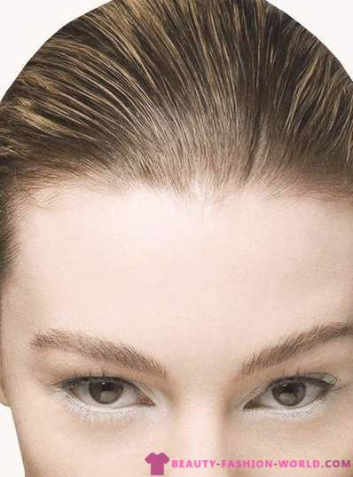

Kaip išsirinkti tinkamiausius akinius nuo saulės?

2020 m. spalio 29 d. 11:41 val., ketvirtadienis
Facebook RSS PDF
ve Žinios Sveikata Sveikata
Sveikata
Kaip išsirinkti tinkamiausius akinius nuo saulės?
2019-05-16 , 08:37
lsveikata
Spausdinimo versija | Pasidalink
© pixabay.com
Reklama
Saulė – puikus vaistas. Mokslo įrodyta, jog veikiant ultravioletiniams spinduliams, smegenų ląstelėse ima gamintis vadinamasis laimės hormonas – seratoninas, kuris suteikia džiaugsmo ir žvalumo pojūtį. Būnant saulėkaitoje (pakanka vos 15 minučių per dieną vasaros metu), odoje formuojasi vitaminas D. Jis reguliuoja mineralinių medžiagų apykaitą, yra reikalingas kaulams ir dantims, stiprina imunitetą.
Nors apie saulės teigiamą poveikį galima kalbėti daug, svarbu atminti, kad ji gali būti pavojinga, ypač akims. Apie saulės akinius pasakoja optikų „Fielmann“ optometrijos specialistas Aivaras Daukontas.
Nuo ko apsaugo saulės akiniai
Ilgai būnant saulėje be jokių apsaugos priemonių – akinių nuo saulės, plačiabrylių skrybėlių, kepurių su snapeliais, akys ilgainiui gali pradėti ašaroti, tapti labai jautrios šviesai, nemaloniai perštėti. Ilgesnis tiesioginis žvilgsnis į saulę gali baigtis rimtu akių tinklainės pažeidimu. Saulės akiniai akis apsaugo ne tik nuo kenksmingų saulės spindulių, bet ir nuo įvairių dulkių, žiedadulkių ir kitokių nešvarumų. Šiandien saulės akiniai yra ne tik puiki apsaugos nuo saulės priemonė, bet ir stiliaus aksesuaras, tad pirkėjas gali rinktis iš nemažai variantų.
Korekciniai saulės akiniai
Į daugelį įprastų akinių nuo saulės galima įdėti tamsintus, regėjimą koreguojančius akinių lęšius. Saulės akiniai „su dioptrijomis” yra puikus pasirinkimas tiems, kurie nuolat nešioja korekcinius akinius bei vairuoja ar būna gamtoje. Korekciniai akiniai gali būti įvairūs: tamsūs, tamsėjantys arba poliarizaciniai.
Reklama
Tamsėjantys saulės akiniai – mėgstantiems universalumą
Saulės akiniai su tamsėjančiais (fotochrominiais) lęšiais būnant saulėkaitoje patamsėja, o įėjus į patalpą vėl tampa šviesūs. Tokie akiniai patogūs tiems, kurie nuolat nešioja akinius ir nenori jų nuolat kaitalioti su korekciniais saulės akiniais.
Ilgą laiką „fotochrominiai” lęšiai buvo populiarūs tarp vyresnių žmonių, tačiau šiandien galima rinktis iš daugiau lęšių spalvų, tad juos atranda ir jaunimas. Naujos technologijos leidžia suderinti veidrodinį ir tamsėjantį lęšius, lęšiai greitai tamsėja bei šviesėja.
Visgi renkantis tamsėjančius saulės akinius, derėtų atminti vieną dalyką: daugumos automobilių priekiniai stiklai turi UV filtrus, tad vairuojant „fotochromo“ efektas neveikia, lęšiai netamsėja ir neapsaugo nuo akinimo.
Poliarizaciniai lęšiai – maksimaliam ryškumui
Tiek paprastų akinių nuo saulės, tiek akinių nuo saulės su dioptrijomis lęšiai gali būti poliarizaciniai. Šios rūšies privalumas tas, kad ji nuima aplinkos atspindžius, todėl dar labiau padidina regėjimo ryškumą. Žmogus mato kontrastingus, natūralių spalvų vaizdus, mažiau pavargsta akys. Pabandžiusieji akinius, kurių lęšiai poliarizuoti, dažnai kitokių lęšių net nebesirenka – įvertina regėjimo komfortą.
Reklama
Kontaktinių lęšių ir saulės akinių derinys
Kontaktinių lęšių ir akinių nuo saulės „kombinaciją“ renkasi tie, kurie mieliau nešioja kontaktinius lęšius, o ne akinius. Taip pat tie, kurie dėl itin specifinių ir aukštų regėjimo korekcijos reikalavimų negali pasirinkti korekcinių saulės akinių tamsintais ar tamsėjančiais akinių lęšiais.
Akis saugo tik geros kokybės akiniai
Akinius nuo saulės patartina pirkti optikos salonuose. Iškritus detalei ar akinius sulaužius, juos galėsite atnešti remontui: optikos salono darbuotojai užsakys reikiamą detalę ir akinius pataisys.
Ant kokybiškų akinių nuo saulės kojelių (paprastai vidinėje jų pusėje) visada yra nurodomas lęšio filtras t.y. kokį saulės spindulių kiekį akiniai sulaiko. Kuo šviesesnė aplinka, tuo aukštesnis akinių tamsumo lygis.
Paprastai saulės akinių lęšiai skirstomi į 5 kategorijas:
Reklama
akiniai su šviesiausiais lęšiais žymimi skaičiumi „0“, jie sulaiko iki 20 proc. saulės šviesos;
skaičius „1“ reiškia nuo 20 iki 57 proc. saulės šviesos sulaikymą;
skaičius „2“ žymi nuo 57-82 proc. saulės spindulių sulaikymą, dažniausiai tinka vidurio ir rytų Europos platumoms;
skaičius „3“ reiškia 82-92 proc. apsaugą. Tokie akiniai pravers atostogaujant pietų kraštuose, paplūdimiuose, ant vandens bei labai jautrioms akims;
skaičiumi „4“ žymimi saulės akiniai sulaiko nuo 92 iki 97 proc. saulės šviesos. Aukščiausias tamsinimo laipsnis skirtas apsaugoti nuo labai stipraus saulės spindulių srauto, kurį atspindi vanduo, ledas arba sniegas. Su šiais akiniais negalima vairuoti automobilio.
VLMEDICINA
Žymos : akiniai nuo saulės
Daugiau susijusių straipsnių
Kodėl nesaugome akių nuo saulės? Dažniausios klaidos ir mitai apie saulės akinius Madingiausi saulės akiniai - 2017 Vasarą būtina saugoti akis nuo saulės Madingiausi - drugelio formos akiniai Kodėl reikia saugoti akis nuo tiesioginių saulės spindulių? Renkamės akinius nuo saulės Stilinga puošmena ir komfortas akims Akiniai ir protokolas: kaip tai suderinti?Griežtai draudžiama "Vakarų eksprese" paskelbtą informaciją kopijuoti ir platinti kitose interneto svetainėse, tradicinėse žiniasklaidos priemonėse ar kitaip ją naudoti neturint raštiško leidėjų sutikimo . Turinio naudojimo taisyklės .
Tavo komentaras
Šiandien VE.lt skaitykite
Sveikata
Daugiau
Paspirtukas - ne pramoga: skaudžios didelio greičio pasekmės
Itin sparčiai populiarėjantys elektriniai paspirtukai kelia nerimą įvairių sričių specialistams - daugėja...
Kad ir kokia tamsi atrodytų naktis, – rytas visada ateina
( 1 )
Daugeliui iš mūsų šiuo metu sunkiau nei įprastai, todėl ypač svarbu žinoti,...
Medikų pašaukimo istorijos – garsios fotomenininkės portretuose
Viena lemtinga išgirsta frazė, iš kartos į kartą perduodama tradicija, nuo mažų...
Atopinis dermatitas: nereikia kentėti, yra būdų gydytis
Atopinį dermatitą žmonės kartais vadina uždelsto veikimo bomba, nes ši liga vaikams...
Kriminalai, Spalio 28 dieną, trečiadienį, šalies keliuose eismo įvykiuose, pirminiais duomenimis, žuvo vienas...
Klaipėda, Nors sergamumas COVID-19 antrosios bangos metu didesnis nei per pirmąją bangą, pavasarį...
Lietuva, Penktadienį, spalio 30 d., Lietuvos paštas išleis A. Ratkevičienės kurtą pašto ženklą...
Ūkis, Klaipėdoje, kaip ir visoje Lietuvoje, populiarėja palaikų kremavimas. Atsirandant vis didesniam krematoriumų...
Magistralėje apvirtus automobiliui nukentėjo mažametis
Kriminalai, Paskelbta prieš 14 min.
Sergančiųjų daugiau, dezinfekcijos mažiau
( 1 )
Klaipėda, Paskelbta prieš 40 min.
Lietuvos paštas išleis pašto ženklą baltarusiams
Lietuva, Paskelbta prieš 43 min.
Atsinaujinusi „Aterna“ stebi kolumbariumo paklausos augimą
Ūkis, Paskelbta prieš 59 min.
Naujienos
Daugiau